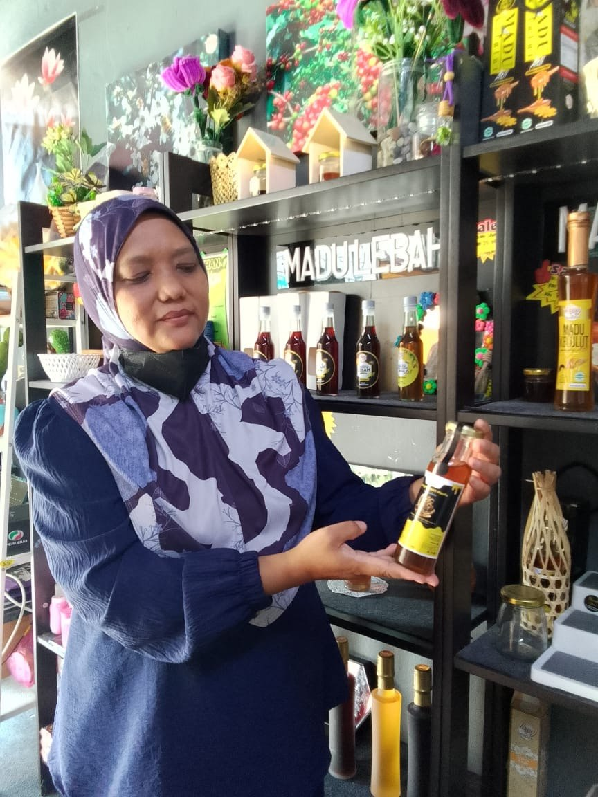

Kenali kisah di sebalik usaha, cabaran dan semangat seorang usahawan madu kelulut dari Perlis yang dikenali sebagai muhaini binti mad isa, umur 44 tahun dan status sudah berkahwin.

Sebelum ini bekerja dalam bidang pengurusan sebagai Management Manager di pejabat.
SPM dan mengambil kursus kemahiran serta pernah menjadi coach SSDM.
Terlibat dalam industri madu kelulut selama 3-4 tahun bersama keluarga.
Bermula ketika COVID-19 apabila permintaan madu meningkat dengan mendadak.
Dapat menyertai kursus madu kelulut dan mengenali ramai usahawan.
Cabaran utama ialah modal, cuaca dan risiko kerosakan ladang.untuk perniagaan madu kelulut ini adalah apabila ladangnya ditimpa masalah contoh banjir atau rosak disebabkan itu tiada produk untuk dijual kerana tidak ada penghasilan, jika berlaku banjir boeh menyebabkan kerugian seribu lebih pokok. Untuk pulih semula mengambil masa lebih kurang 2-3 bulan. Disebabkan itu terpaksa mengambil madu kepada supply lain.